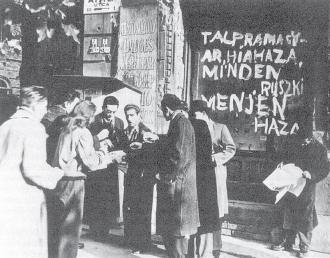

1956. október 23.
Figyelem! Olvassa el a forradalom örökségét bemutató oldalt itt!
A Forradalom Eseményei
A Forradalom Kirobbanása
A tömegek október 23-án vonultak az utcára, követelve a szovjet csapatok kivonását és a politikai szabadságot. A demonstráció hamarosan fegyveres felkelésbe torkollott.
A Forradalom Követelései

A felkelők 16 pontban fogalmazták meg követeléseiket, melyek között szerepelt a szovjet csapatok kivonása, többpártrendszer bevezetése és a politikai foglyok szabadon bocsátása.